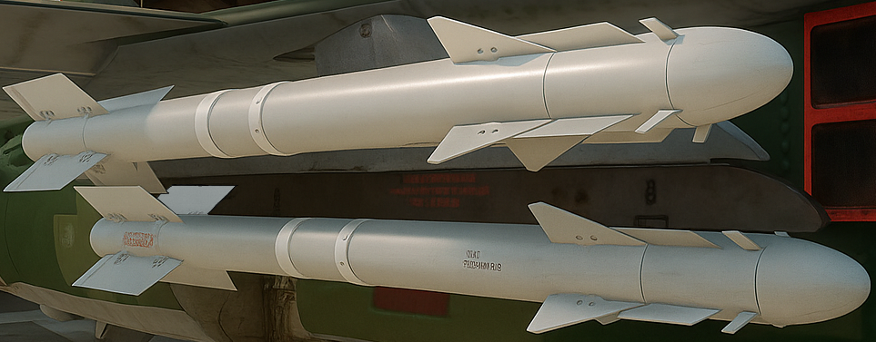

PDZ domestic multirole fighter
| ZK-11 | |
|---|---|
|  | |
| Two ZK-11s mounted on a Mig-23UDL-E1 | |
| Information | |
|---|---|
| Type: | Short-range air-to-air missile |
| Place of Origin: | Zegra |
| Specifications | |
| Mass: | 91 kilograms (201 lb) |
| Length: | 1.91 meters (8 ft 10 in) |
| Diameter: | 165 millimeters (6.5 in) |
| Wingspan: | 500 millimeters (19.5 in) |
| Warhead: | 7.4 kilograms (16 lb) |
| Engine: | Solid-fuel rocket engine |
| Operational Range: | 30 kilometers |
| Top Speed: |
ZK-11A/ZK-11M: Mach 2.5 ZK-11MV: Mach 3.2 |
| Guidance System: | All-aspect infrared homing |
| Off-Boresight: |
ZK-11A: ±75° ZK-11M/ZK-11MV: ±90° |
The ZK-11 is a domestically produced short-range infrared-guided air-to-air missile developed by the Zorya-Konstrukt Bureau, a defense enterprise of Zegra. Designed to replace inherited Soviet-era R-60 and R-73 missiles, the ZK-11 was created as part of a broader national modernization program to reduce reliance on both Russian and Western military supply chains.
The missile features an advanced high-resolution imaging infrared (IIR) seeker, capable of target discrimination in cluttered environments and hardened against modern flare and directional infrared countermeasures (DIRCM). A compact thrust-vectoring control system enables exceptional maneuverability, allowing the ZK-11 to perform high off-boresight (up to ±90° by variant) engagements with remarkable effectiveness. It supports both lock-on-before-launch (LOBL) and lock-on-after-launch (LOAL) modes, and is fully compatible with helmet-mounted cueing systems and digital fire control interfaces.
Constructed using lightweight composite alloys and precision-engineered internal components, the ZK-11 is more expensive to produce than legacy Soviet systems or mass-produced foreign equivalents. However, the combination of high agility, robust ECCM resistance, and advanced seeker performance has been seen as sufficient justification for its cost within Zegra’s defense planning circles—especially given its role as a sovereign, domestically controlled solution.
Though compatible with older Soviet-standard pylons, the ZK-11 was optimized for use on modernized national platforms such as the MiG-23UDL-E2, where it replaced remaining stocks of R-73s.
While officially categorized as a defensive modernization asset, the ZK-11’s performance characteristics place it firmly alongside 4th- and even 5th-generation short-range air-to-air missiles. It is not formally offered for export, though limited interest has been recorded from partner nations with aligned strategic interests.
Initial flight testing of the ZK-11A began in late 2023, with evaluations carried out by the Zegran Air Force at Kalensk Air Range and other regional proving grounds. Early assessments confirmed the missile’s high agility and reliability, with a reported effective range of approximately 30 km against subsonic aerial targets. The seeker exhibited consistent tracking performance within its ±75° off-boresight envelope, particularly when cued by helmet-mounted sights.
The upgraded ZK-11M variant, featuring a refined seeker and improved signal processing, demonstrated increased off-boresight acquisition (±90°), faster lock-on times (average 1.1 seconds), and improved resilience to common infrared countermeasures. During trials, the ZK-11M achieved hit probabilities above 85% in within-visual-range (WVR) scenarios and was capable of engaging low-altitude maneuvering targets with high accuracy.
The speed-optimized ZK-11MV was tested in early 2025 as a supplement to the M-series, utilizing an enhanced solid-propellant motor to achieve top speeds exceeding Mach 3.2. The MV variant significantly improved time-to-target in short-range intercepts and high-closure-rate engagements. It proved particularly effective in rapid launch-and-defeat scenarios where response time and target lead margins were critical.
Field evaluations also noted the missile's effective proximity fuse, engaging targets with a lethal radius of 5–7 meters. Across all tested variants, thrust-vectoring control allowed for aggressive terminal maneuvering, contributing to high effectiveness against evading targets. The ZK-11 series performed well in cold-weather environments and high-humidity conditions, with minimal degradation in seeker performance.
While the ZK-11 is considered expensive relative to the legacy IR-guided missiles of the Soviet era, its use of lightweight composite materials and modular electronics has been credited with improving range, responsiveness, and life-cycle maintainability. As of mid-2025, the ZK-11A, ZK-11M, and ZK-11MV are all in service with Zegra’s air force as the primary short-range IR air-to-air missile, primarily on MiG-23UDL platforms and select other aircraft.
ZK-11A - Standard model with ±75° off-boresight.
ZK-11M - ±90° off-boresight, two-color IIR seeker, and upgraded IIRCM for improved resistance to flares and DIRCM.
ZK-11MV - Speed optimized variant of the ZK-11M with improved motor and propellant composition. Top speed increased to Mach 3.2 in favourable conditions.